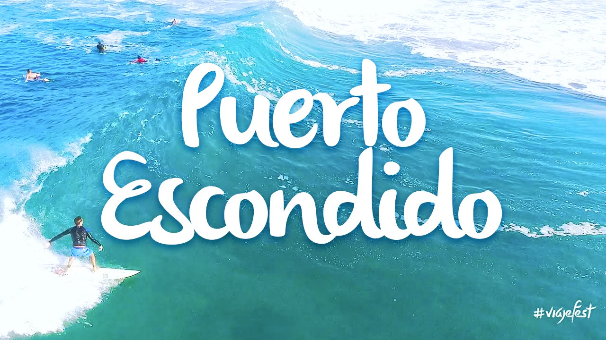
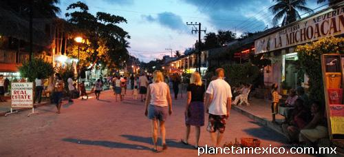
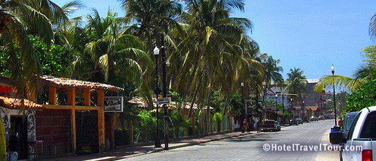
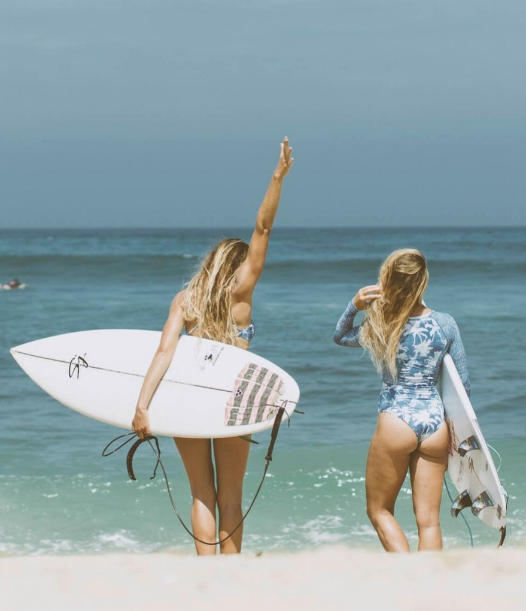
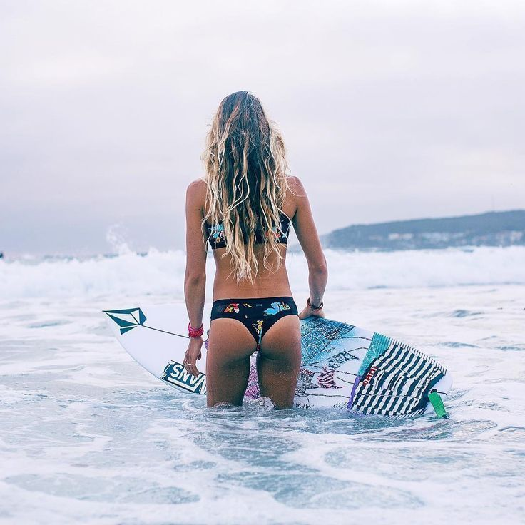
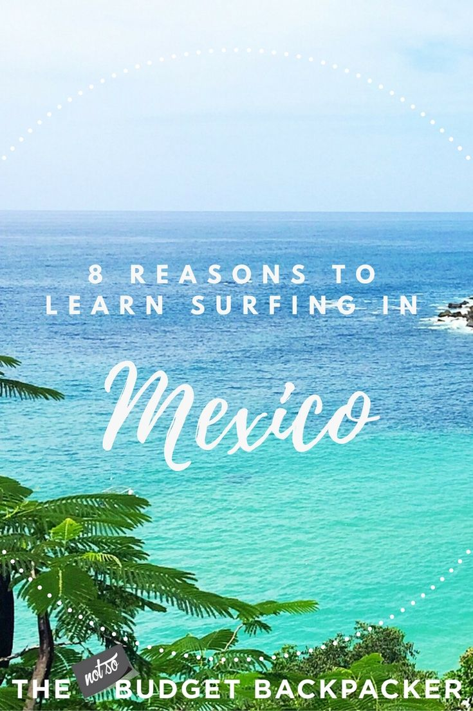

¿Cuál es la mejor temporada para visitar Puerto Escondido?
Como siempre decimos ¡La mejor fecha para visitar un lugar es cuándo se da la oportunidad! Ahora bien, si tienes
flexibilidad las fechas para tu viaje para visitar Puerto Escondido dependiendo de lo que quieras hacer son:
Para ver tortugas: de agosto a diciembre.
Para aprender a surfear puede ser todo el año, ya que distintas playas ofrecen varios tamaños de olas,
aunque para tener las playas menos cargadas y una temperatura más fresca se recomienda de marzo a mayo.
Para surf profesional y ver competencias profesionales de mayo a noviembre.
Para la fiesta cualquier temporada vacacional o puente convoca una mayor actividad.
Para descansar y tener las playas más vacías exactamente lo inverso, cualquier fecha no vacacional y de preferencia entre semana.

Qué hacer en Puerto Escondido
¡Lo que no te puedes perder!
1. Camina por el andador turístico “El Adoquin”
La calle Alfonso Pérez Gasga, es el andador turístico de Puerto Escondido, de día está abierto al tráfico vehicular y de noche es
completamente peatonal. Aquí se vive el ya tradicional ambiente relajado de puerto y se encuentran una variedad importante de objetos curiosos,
artesanías, restaurantes, puestos de comida, touroperadores, entre otros servicios.
2. Pasea por Playa Zicatela
Playa Zicatela es la principal playa de Puerto Escondido, tiene todos los servicios y es una opción realmente muy cómoda, sobre todo si buscas
estar cerca de la civilización y combinar el día con algo de compras. También es muy conveniente si te estas hospedando en uno de los hoteles frente a esta playa.


Actividades
- Entre otras actividades en Puerto Escondido esta la pesca del pez vela, visitar las reservas de tortugas golfinas, quizás cuentes con algo de suerte y puedas observar delfines y ballenas. Pero sí definitivamente eres de espíritu aventurero y atrevido, toma tus clases de surf en las mejores olas y con los mejores instructores en Oasis: Spanish & Surf School un lugar que ofrece el “A,B,C” del Surf, para principiantes y avanzados.
- Si te gusta la comodidad puedes tomar un tour guiado por las playas vecinas, o quizás prefieres relajarte y gozar de un baño medicinal de Temazcal, pues estas en el lugar perfecto.
- El ecoturismo es parte esencial de este paraíso, ya que cuenta con manglares con aves exóticas que han emigrado de distintas partes del mundo, algo que puedes admirar en tu siguiente viaje.
3. Visita las playas de los alrededores
Algo realmente lindo de Puerto Escondido, es que tiene playas para todos los gustos, desde tranquilas
olas sin oleaje ideales para niños y nadar, hasta playas con distintos oleajes para surf y deportes acuáticos.
4. Salir de fiesta en Puerto Escondido
El ambiente relajado se combina con los sonidos de reggae, música electrónica y otros estilos guapachosos, aunque también se encuentran una variedad de lugares con pop, rock y otros géneros. En los alrededores de playa Zicatela hay varios bares y discotecas y algunos hoteles y hostales también ofrecen espectáculos y música en vivo.
5. Surf en Puerto Escondido
El Surf está presente en la mayoría de las playas de Puerto Escondido y ha tenido una influencia importante en los jóvenes y comunidad local.
Playa Zicatela está considerada como una de las mejores del mundo para practicar este deporte con olas que llegan hasta los 6 metros de altura, por lo que no es la más adecuada para principiantes,
pero si para ver las competencias principalmente en agosto que se lleva a cabo la International Board’s y en noviembre el Torneo Internacional de Surfing.
|  |
Los hombres no son los únicos que surfean, hay muchas mujeres que lo hacen increíble, incluida Isabelle Leonhardt,
la mexicana que se ubicó en segundo lugar en la Copa WSL Puerto Escondido en 2018, una de las seis mujeres que compitieron en el evento que antes era
exclusivamente masculino.
|
El surf es un deporte que requiere mucho entrenamiento en donde la mezcla de fuerza y destreza son los ingredientes principales.
Las chicas además de entrenar constantemente en diferentes playas, asisten al gimnasio para estar en forma, ganar musculo y tener fuerza en piernas y abdomen; además alternan
con yoga, estiramientos, spinning o andar en bicicleta.
|  |
|
|  |
El surf es genial, de eso no hay duda, pero ese surfista que crees que está tratando de impresionar a las mujeres (que bien podría ser el caso) tiene un mayor contacto con del océano que tú y yo. Él puede decirte si la marea está entrando o bajando, cuándo llegará la próxima serie de buenas olas e, incluso, la manera en que afectará el viaje del agua la dirección del viento. |